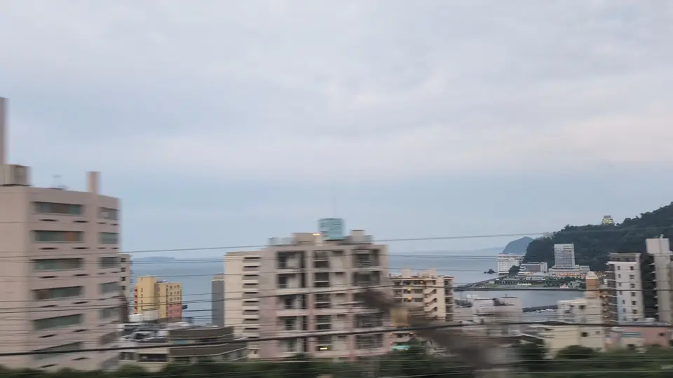
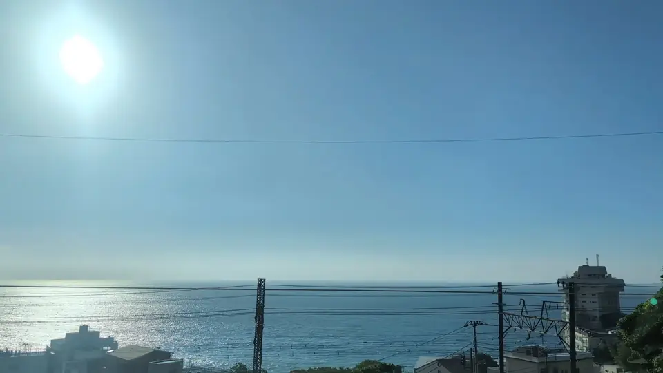

- Section
- Odawara → Atami
- Seat side
- Seat A · sea side
- Timing
- About 36 minutes after leaving Tokyo on a Nozomi train
- Photos
- 6 photos
Where does the sea appear from the Shinkansen?
Heading from Tokyo toward Shin-Osaka, start watching Seat A after Odawara and the Gyoran Kannon statue. The Hayakawa–Atami stretch has many tunnels, so Sagami Bay appears in short openings rather than as one continuous panorama. In those bright gaps, the coastline, headlands, and hillside neighborhoods overlap. Near Atami, you may also pick out low-lying Hatsushima offshore and the white Atami Castle on the hill.
More: Atami Tourism: Highlights of Atami (Japanese only)Atami Tourism: Hatsushima Island (Japanese only)Atami Tourism: Atami Castle (Japanese only)Atami City: Geography and environment of Atami (Japanese only)@letus10: Hatsushima window article (Japanese only)@letus10: Atami Castle window article (Japanese only)
If you are traveling from Tokyo toward Shin-Osaka, start watching the Seat A · sea side window as you approach Odawara → Atami. If you are traveling toward Tokyo, the order is reversed.
What are the island and the white castle?
Atami developed on steep slopes descending from the mountains toward Sagami Bay. From the train, the sea, stacked houses and hotels, and the green hills appear in layers. That vertical overlap is what makes the Atami coastline distinctive.
The low island offshore is Hatsushima, an inhabited island about 10 kilometers from Atami Port and roughly 4 kilometers around. Look for a long, low outline in front of the horizon rather than a mountainous island.
The white, castle-like building on the hill is Atami Castle. It is not a surviving feudal castle; it was built in 1959 as a tourist attraction. Its position above Nishikigaura makes it a useful visual marker that Atami is close.
Location at a glance
Open mapSwitch between the spot and the Shinkansen viewpoint.
How to catch Atami & Sagami Bay
1. Choose the window first
As you approach Odawara → Atami, start watching from Seat A · sea side. Use Live Guide while riding, or the map on this page before you board.
This wider view appears intermittently through the section. Buildings and terrain may block it, so the timing is a guide for when to start looking, not a continuous visibility claim.
2. Highlights
The main attraction is the changing sequence rather than one landmark. After Gyoran Kannon, watch Seat A and react when the window brightens after a tunnel. Hatsushima is a low outline on the water; Atami Castle is the white building high on the slope.
Atami & Sagami Bay in photos





References
- Atami Tourism: Highlights of Atami (Japanese only)
- Atami Tourism: Hatsushima Island (Japanese only)
- Atami Tourism: Atami Castle (Japanese only)
- Atami City: Geography and environment of Atami (Japanese only)
- @letus10: Hatsushima window article (Japanese only)
- @letus10: Atami Castle window article (Japanese only)
 Related
Mt. Fuji
Related
Mt. Fuji
 Related
To-ji Pagoda
Related
To-ji Pagoda
 Related
Tokyo Tower
Related
Tokyo Tower